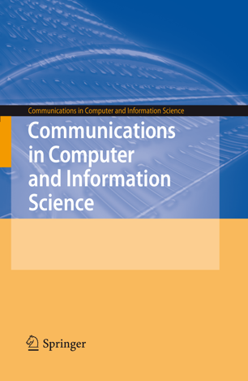

Call for Workshops
The ACPR 2019 Organizing Committee invites proposals for workshops that will be held on the day before the main conference.
Researchers interested in organizing workshops at ACPR2019 are invited to submit a proposal, which includes the following information:
- Title
- Preference for the duration (full day or half day)
- Scope and motivation
- Topics
- Relevance for ACPR
- Organizing committee and program committee
- Short CV of organizers
The Workshop Chairs encourage researchers to submit proposals on recent important topics in pattern recognition (in a wide sense), possibly with a focus on theory, on particular applications, or on both combined. Workshops proposing topics discussing future developments in pattern recognition or real applications are also welcome.
Notes
− ACPR organizers will handle workshop registration and provide workshop spaces, coffee break catering, and other facilities required to organize workshops (room, data projector, poster stands – as advised by workshop organizers). Registration for workshops is included in the conference registration, i.e., all the registered ACPR participants are free to attend any of the workshops (besides all the sessions of the main conference).
− If a workshop incurs costs for invited speakers, the workshop organizers are required to cover those costs by their own arrangements. The workshop organizers may solicit sponsorship to cover the relevant costs; sponsorships will be acknowledged as explained on the ACPR sponsorship website. Invited workshop speakers will be provided free registration by the ACPR organizer.

Workshop Proceedings
− Workshop proceedings will be published after the conference in the CCIS series of Springer through the ACPR organizers (publication chair). At the conference, workshop papers will be distributed on USB, together with the ACPR main conference proceedings.
− USB and proceeding costs are covered by the ACPR organizers.
− For timely publication, we expect the complete set of all accepted workshop papers (in CCIS format, 14 pages maximum each) camera-ready by October 21, 2019 or prior.
− If the conditions above are not met, the proceedings will not be published through the ACPR organizers, and they will need to be published locally by the workshop organizers.
Submission Guidelines and Inquiries
All proposals should be submitted by 31 March 2019 by email to the Workshop Chairs: Michael Cree <michael.cree@waikato.ac.nz>, Fay Huang <fay@niu.edu.tw>, and Junsong Yuan <jsyuan@buffalo.edu>
For any inquiries you may have regarding the workshops, please contact the Workshop Chairs via the above email addresses.
Important Dates
- Proposal due: April 10, 2019
- Acceptance notification: April 15, 2019
- Date of workshops: November 26, 2019